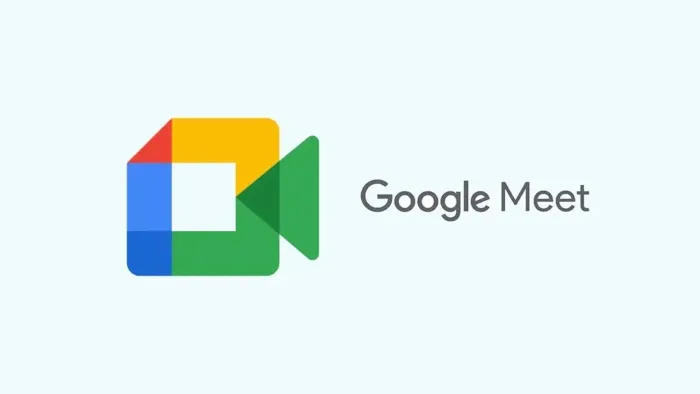

Google Meet nedir? Google Meet nasıl kullanılır?

Google tarafından geliştirilen iş odaklı video konferans aracı olan Google Meet ile ilgili tüm detaylara sayfamızdan ulaşın. Google Meet Nedir? Google Meet Nasıl Kullanılır?
Google Meet, Google'ın işletmelere özel olarak sunduğu bir video
konferans çözümüydü. 2020 yılında tüm kullanıcılar tarafından
kullanılabilmesi için ücretsiz hale getirildi. Peki, Google meet
nedir? Google meet nasıl kullanılır? Tüm bu soruların cevabını
haberimizde bulabilirsiniz.
Google Meet onlarca farklı kişinin aynı sanal toplantıya
katılmasına izin verir. İnternet erişimleri olduğu sürece insanlar
birbirleriyle konuşabilirler veya video görüşmesi yapabilirler.
Google Meet üzerinden toplantıdaki herkesle ekran paylaşımı
gerçekleştirilebilir.
Goole Meet Nedir?
Google Meet, Google tarafından geliştirilen iş odaklı bir video
konferans aracıdır. Google Meet, Google Hangouts görüntülü
sohbetlerinin yerini aldı ve kurumsal kullanım için bir dizi yeni
özellikle geldi. Kullanıcılar 2020 yılından itibaren
Google Meet'e ücretsiz olarak erişim hakkı elde ettiler. Google
Meet'in ücretsiz sürümünde bazı sınırlamalar söz konusu. Ücretsiz
kullanıcıların toplantı süreleri, 100 katılımcı ve 1 saat ile
sınırlı. Birebir görüşmelerde bu sınır maksimum 24 saat. Google
Workspace Essentials veya Google Workspace Enterprise satın alan
kullanıcılar ise bu sınırlamalardan muaflar.
Google Meet Nasıl Kullanılır?
Google Meet kullanım kolaylığı ile tanınır. Sadece birkaç dakika
içerisinde Google Meet'in nasıl kullanılacağı öğrenilebilir. Bir
toplantı oluşturmak, bir toplantıya katılmak ve ayarları
düzenlemek oldukça basit. Sadece hangi ayarı nasıl kullanacağınızı
bilmeniz yeterli.
* Google Meet'i web tarayıcısından kullanmak için
apps.google.com/meet adresini ziyaret edin. Sağ üst kısma göz atın
ve bir toplantı başlatmak için "Toplantı başlatın" veya bir
toplantıya katılmak için "Toplantıya katılın" butonuna tıklayın.
* Google Meet'i Gmail hesabınızdan kullanmak için web tarayıcısından Gmail'e giriş yapın ve sol menüden "Toplantı başlatın" butonuna tıklayın. * Google Meet'i telefondan kullanmak için Google Meet uygulamasını (Android ve iOS) indirin ve ardından "Yeni toplantı" butonuna dokunun. Toplantı başlattıktan sonra size bir bağlantı sunulur. Bu bağlantıyı kullanarak başkalarını toplantıya katılmaya davet edebilirsiniz. Bir toplantının kodunu biliyorsanız kodu kullanarak toplantıya giriş yapabilirsiniz. Gerek duymanız durumunda toplantılar için görüntüleme ayarlarını değiştirebilirsiniz.
Google Meet Nasıl Toplantı Oluşturulur?
Google Meet üzerinden toplantı oluşturmak oldukça kolay. Ancak işlemler kullanılan cihaza göre değişiklik gösterir. Bilgisayarınızdan veya telefonunuzdan sorunsuz bir şekilde toplantı oluşturabilirsiniz. Bunun için takip etmeniz gerekenler oldukça basit
Bilgisayardan Toplantı Başlatma
1. Bilgisayarınızdan web tarayıcısı açın ve apps.google.com/meet
adresine giriş yapın.
2. Karşınıza çıkan web sayfasında sağ üstte yer alan mavi renkli
"Toplantı başlatın" butonuna tıklayın.
3. Google Meet'i kullanmak istediğiniz Google hesabını seçin veya
hesabınız yoksa Google hesabı oluşturun.
4. Giriş yaptıktan sonra toplantınız başarıyla oluşturulacak.
Şimdi toplantı bağlantısını kullanarak insanları Google Meet
toplantınıza davet edin.
Telefondan Toplantı Başlatma
1. Telefona indirdiğiniz Google Meet uygulamasını açın.
2. Android telefon kullanıyorsanız hesabınıza otomatik olarak
giriş yapılacak. iPhone kullanıyorsanız ilgili Google hesabınıza
giriş yapın.
3. Google Meet uygulamasında yer alan "Anında toplantı başlat"
seçeneğine dokunun ve bir toplantı başlatın.
4. Toplantı başladıktan sonra toplantı bağlantısını kullanarak
insanları Google Meet toplantınıza davet edin.
Google Meet Bilinmeyen Özellikleri Nelerdir?
Google Meet toplantılarından en iyi şekilde faydalanmak için bazı önemli özelliklerden yararlanmak isteyebilirsiniz. Çoğu kullanıcı bu özellikleri bilmez. Ancak siz bu özellikleri öğrenerek Google Meet'i bir uzman gibi kullanmaya başlayabilirsiniz. 1. Kontrol özelliği: Herhangi bir Google Meet toplantısına katılmadan önce ses ve video kontrolü yapabilirsiniz. Toplantı bağlantısına girin, oturum açın ve videonun altındaki "Ses ve video kontrolü" kısmına tıklayın. 2. Düzen ayarı: Google Meet toplantısı oluşturduysanız ve çok fazla kişi katılacaksa toplantı görünümünü değiştirebilirsiniz. Toplantı açıkken alt kısımda yer alan "üç nokta" simgesine tıklayın ve ardından "Düzeni değiştir" seçeneğini kullanın. 3. Sabitleme özelliği: Çok fazla kişinin katıldığı toplantılarda asıl konuşmacıya odaklanmakta sorun yaşayabilirsiniz. Asıl konuşmacının karosuna doğru gelin ve onu sabitlemek için "raptiye" işaretine tıklayın. 4. Kaydetme özelliği: Google Meet toplantınızı daha sonra başka bir yerde kullanmak veya tekrar izlemek istiyorsanız onu kaydedebilirsiniz. Toplantı açıkken alt kısımda yer alan "üç nokta" simgesine tıklayın ve ardından "Toplantıyı kaydet" seçeneğini kullanın. 5. Arka plan değiştirme: Google Meet toplantılarında arka planı değiştirme şansınız var. Arka plana bir resim ekleyebilir veya arka planı bulanıklaştırabilirsiniz. Böylece nerede olursanız olun kamera görüntüsünde sadece yüzünüzün gözükmesini sağlarsınız. 6. Ekran paylaşma: Ekran paylaşma toplantılarda oldukça kullanışlı olabilir. Toplantıya katılanlarla bilgisayarınızın ekranını, bir tarayıcı penceresini veya bir tarayıcı sekmesini paylaşabilirsiniz. Yapmanız gereken alt kısımdaki "yukarı ok" işaretine tıklamak ve seçim yapmak. Google Meet için Bir Google Hesabı Gerekiyor mu? Google Meet'i kullanabilmek için bir Google hesabına ihtiyacınız olacak. Daha önce bir Gmail hesabı oluşturduysanız doğrudan bu hesabı kullanabilirsiniz. Google kullanıcıların güvenliğini sağlamak adına uçtan uca şifreleme işlemini gerçekleştirmek için hesap kullanımını zorunlu kılar. Eğer Google hesabınız yoksa ücretsiz bir biçimde kolayca hesap açabilirsiniz. İhtiyaç duymanız durumunda Google Meet toplantılarını Google Drive'a kaydedebilirsiniz. Kaydedilen tüm toplantılar şifrelenmiş olur ve ilgili Google hesabınız dışında ona erişim sağlayamazsınız.